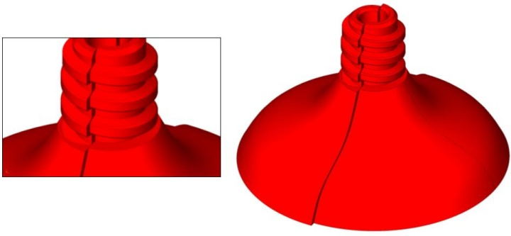
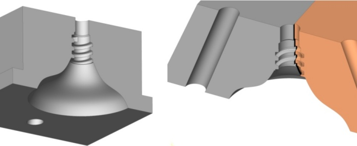
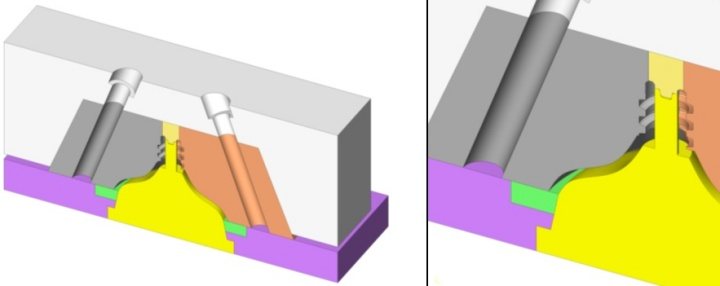
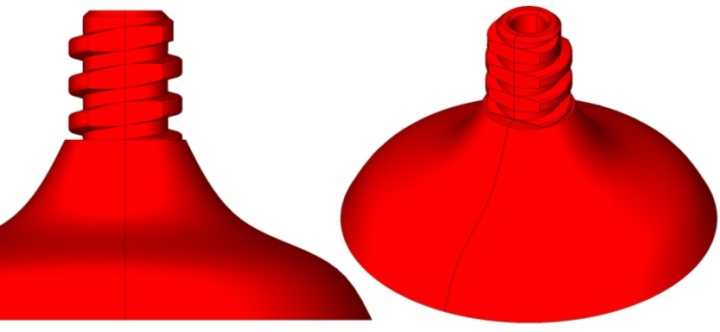
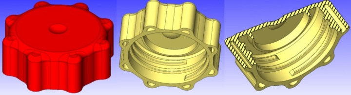
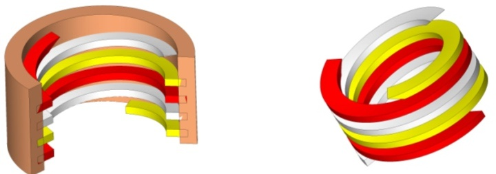
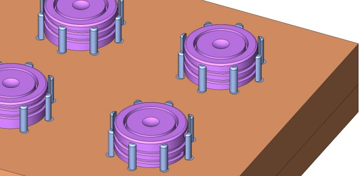
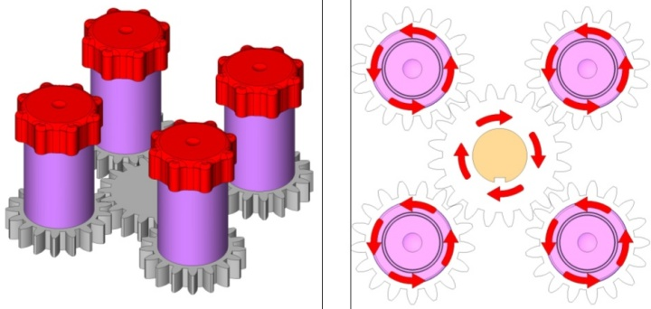
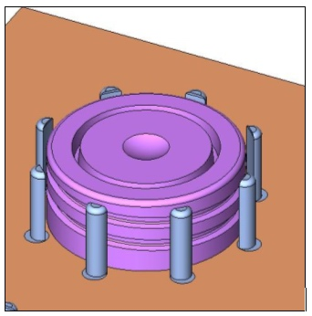

|
DIÞ DÝÞLÝ VÝDA KALIPLARI
Dýþ diþlerin merkezinden geçen kalýp ayrým çizgisi, vidayý ikiye bölen bir iz yaratýr. Zaman içerisinde kalýbýn aþýnmasý, eksenden kaymasý gibi durumlar oluþtuðunda, vida üzerindeki iz büyüyebilir, vida eksenleri kayabilir ve diþler birbirinden uyumsuz halde kalýplanabilir.

Resim 6 - Tabure ayaðý kalýbýnda, zaman içerisinde kalýp maçalarý aþýnmýþ ve eksenlerinden kayarak ürünün kullanýlamayacak þekilde hatalý çýkmasýna sebep olmuþtur.

Resim 7 - Soldaki resimde tabure ayaðý kalýbýnýn bir maçasý görülmektedir. Saðdaki resimde ise iki maçanýn birbiri ile temasýndaki problem gösterilmiþtir.
Diþler yandan çalýþacak maçalar gerektirebilir buda kalýp maliyetini artýracaktýr. Aþaðýdaki resimlerde dýþ diþleri bulunan tabura kalýbýnýn maça sistemi görülmektedir. Sað ve sol olmak üzere, iki adet maça, ürünün diþlerini oluþturmaktadýr. Ürün kalýptan sýyýrýcý parça (yeþil renkli) ile çýkarýlmaktadýr.

Resim 8 - Tabure ayaðý kalýbýnýn maça sistemi
Maça kenarlarýnýn zamanla aþýnmasý, çapak yapmaya baþlamasý ya da kayarak bozuk diþler oluþturmasýnýn önüne geçmek zor olsa da, vida formunda yapýlacak küçük bir deðiþiklik, bu sorunlarýn etkilerini en aza indirir.
Vida diþlerinin, maçalarýn kalýp ayrým çizgilerinde ki bölgelerini düz olarak yapýldýðýnda, zaman içerisinde bu bölgede oluþacak çapak ya da eksen kaçýklýðý, ürünün kullanýlabilirliðini etkilemez. Fonksiyonelliðini kaybetmeyen ürün, estetik bir kusur oluþturmuyorsa, kullanýlmaya devam edilir.

Resim 9 - Maça kalýp ayrým çizgisindeki, vida diþleri düz olarak yapýlmýþ
ÝÇ DÝÞLÝ VÝDA KALIPLARI

Resim 10 - Ýç diþlere sahip bir ürün
Ýç diþler, diþleri kalýptan çýkartacak mekanizmalar, sistemler gerektirir. Kalýp maliyetinde önemli bir artýþ demektir. Kalýp karmaþýklýðýnda artýþ olacaktýr. Dönerek kalýptan çýkarýlan iç diþli vidalarýn, kalýptan çýkýþ süreleri de uzundur. Diþlerin kalýptan dönerek çýkýþ süresini azaltmak için, diþ boyu mümkün olan en küçük deðerde seçilmelidir.
Çok baþlangýçlý iç diþli vidalarýn kalýptan çýkarýlma süreleri daha kýsadýr.

Resim 11 - Üç adet baþlangýç noktasý bulunan diþli örneði. Daha rahat anlaþýlmayý saðlamak için, her diþli farklý renkte gösterilmiþtir.

Resim 12 - Dört gözlü þiþe kapaðý kalýbý

Resim 13 - Ürünün kalýp içerisinden dönerek çýkmasýný saðlayan diþli (redüktör) sistemi ve diþlilerin dönüþ yönleri
Redüktörlü kalýplar olarak ta bilinen bu kalýplarda, ürünler kalýp içerisinden dönerek çýkarýlýr. Resimde görülen 4 gözlü kalýpta, orta bulunan tahrik diþlisi, döndüðü zaman, etrafýnda bulunan diþlileri, kendi dönüþ yönünün tersi yönünde çevirir. Kapaðýn dönmemesi için etrafýndaki pimlerden yararlanýlýr. Bu kalýplarda ürünün kesinlikle dönmemesi gerekir. Sabit duran ürün, diþliler ve dolayýsýyla erkek çekirdek döndüðü zaman, ileri harekete zorlanýr. Ürün bu þekilde kalýptan çýkarýlýr.

Resim 14 - Kapaðýn kendi ekseni etrafýnda dönmesini engelleyen pimler
Vidalý kapak için bir plastik enjeksiyon kalýp animasyonu
|